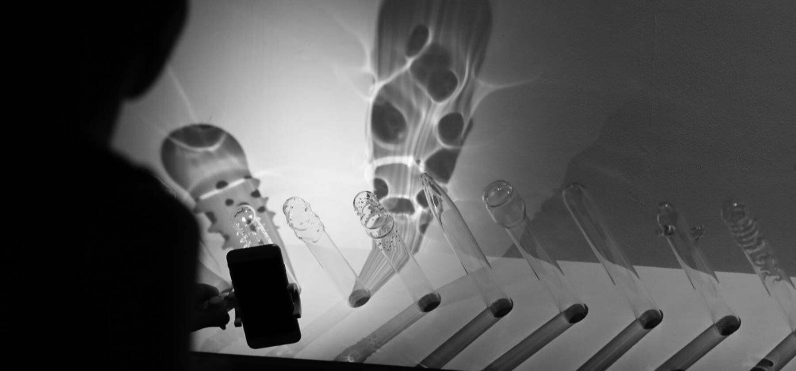
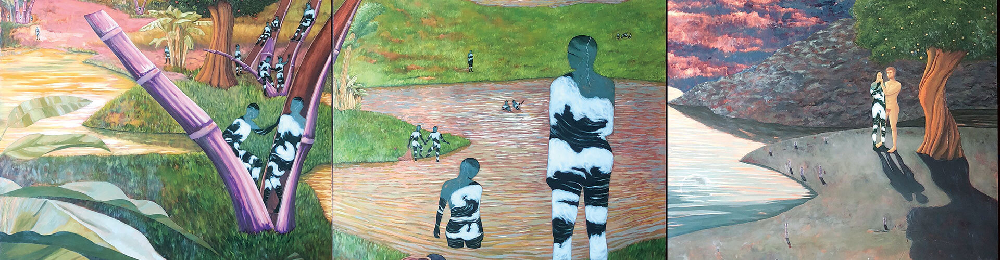
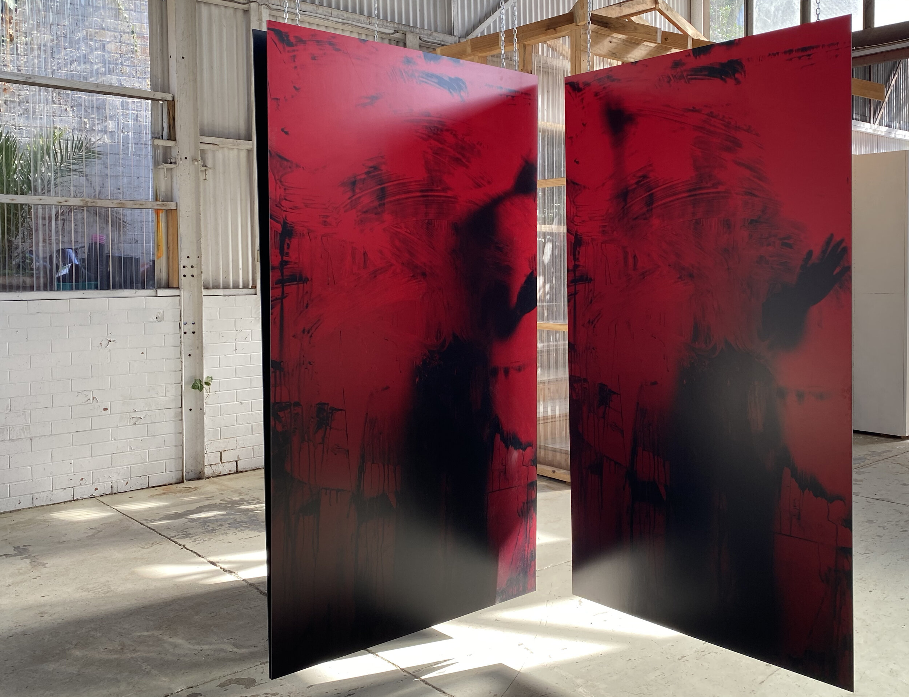
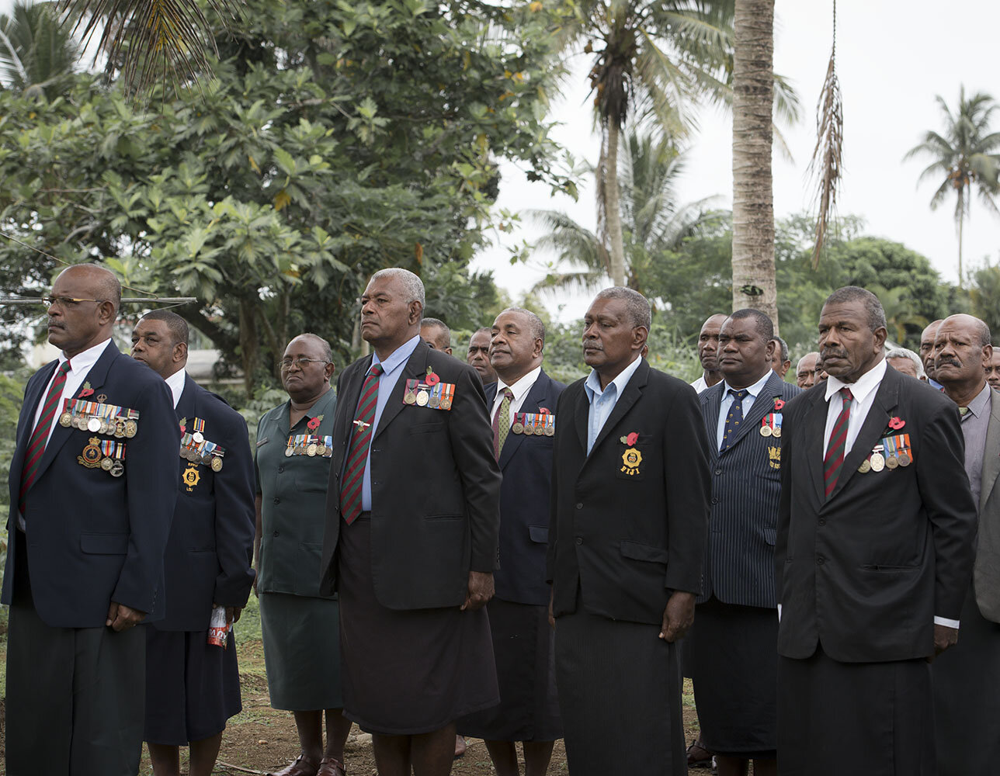
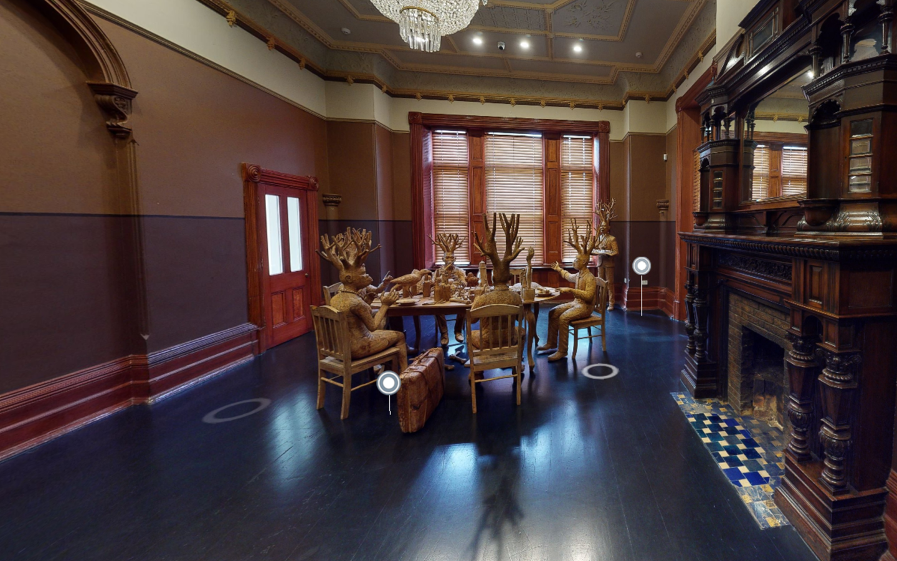
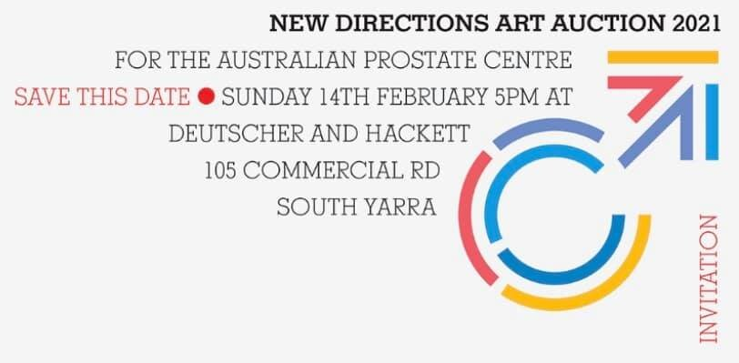

Artwork by Patricia Untario

The tenth chapter in the Gallery’s flagship exhibition series will include 69 projects with new and recent work by more than 100 emerging and established artists, collectives and filmmakers from more than 30 countries. For its landmark tenth edition, the Asia Pacific Triennial looks to the future of art and the world we inhabit together. The vast majority of the exhibition will consist of newly commissioned works of art developed through sustained engagement with this culturally diverse region.
Major new works by artists Kaili Chun (Kanaka Ōiwi,Hawai’i), Gordon Hookey (Waanyi people, Australia), Kimiyo Mishima (Japan), Salote Tawale (Fiji/Australia) and Grace Lillian Lee & Uncle Ken Thaiday Snr (Meriam Mir people, Australia), will be among the highlights of ‘The 10th Asia Pacific Triennial of Contemporary Art’ (APT10).

Ballarat International Foto Biennale
Curated by Katherine Campbell and Sarina Meuleman
Dibalik is the Indonesian word for ‘behind’. This exhibition examines the voices and unspoken stories of Indonesian women which are often expressed indirectly, privately and behind closed doors. Dibalik explores the experiences of Feminism in Indonesia with its longstanding history spurred by political revolution and decolonisation.
Featuring Arum Dayu (IDN), Erika Ernawan (IDN), Meicy Sitorus (IDN) and Tamarra (IDN), this exhibition addresses traumatic histories of comfort women during World War II, religious expression and traditions for women, the male gaze, bodily autonomy and transgender experiences. Dibalik features documentary and contemporary photography which address multiple perspectives of what women have and continue to experience in the public and private realm, both in Indonesia and globally.
This is the first event to be held at Project Eleven’s new artist development space in Ballarat. For more information on the Ballarat International Foto Biennale, please click here.
Dates
28 Aug - 24 Oct, 10am - 5pm
Address
29 Main Road, Bakery Hill, Ballarat

Presented as part of Ten Days on the Island
Composing Archipelagos considers what could happen if lutruwita/Tasmania was to cast off colonial myths of islandness and reframe itself as part of an archipelago stretching across the Asia Pacific. The archipelago, with its unifying but elastic quality, asserts the ocean as a connecting rather than a dividing force. For scholars and activists from Southeast Asia, the Pacific and the Caribbean, it challenges perceptions of regional knowledge and experience as remote and scattered.
Composing Archipelagos originates in Tasmanian artists’ early commitment to geographic perspectives. At the same time, artists with enduring affinities to land, sea and sky are joined by those who loosen the ties between geography and identity.
The artists’ inspiration includes their Pacific ancestral homelands; the energies of the ocean floor that destabilise the divide between the terrestrial and the oceanic; the voyages of Abel Tasman (1642-43/44) who sailed as an agent of the Dutch East India Company (VOC); and the vogue for private islands and the biosecurity they offer. The exhibition acknowledges intergenerational relationships and Indigenous knowledge through the contribution of senior artist Ricky Maynard, James Tylor of Kuarna/Māori/European heritage and Hobart-raised Fijian-Australian Torika Bolatagici.
This project is supported by Ten Days on the Island and Project Eleven.

#Perempuan 2021 celebrates voices and unspoken stories of Indonesian women – a platform for artists to share issues that are not always openly discussed in Indonesia. Selected from the Project Eleven Collection, this exhibition explores activism, values and traditions through a broad range of art forms from painting, textiles, sculpture and installation..
Castlemaine Art Museum 19 March - 4 April 2021
Link for more information.

Curated by Julian Goddard featuring works by Laksmi Shitaresmi, Jeremy Blincoe, Monica Lim, Peter Ellis, Misklectic’, Abdi Setiawan, Fika Rai Santika.
